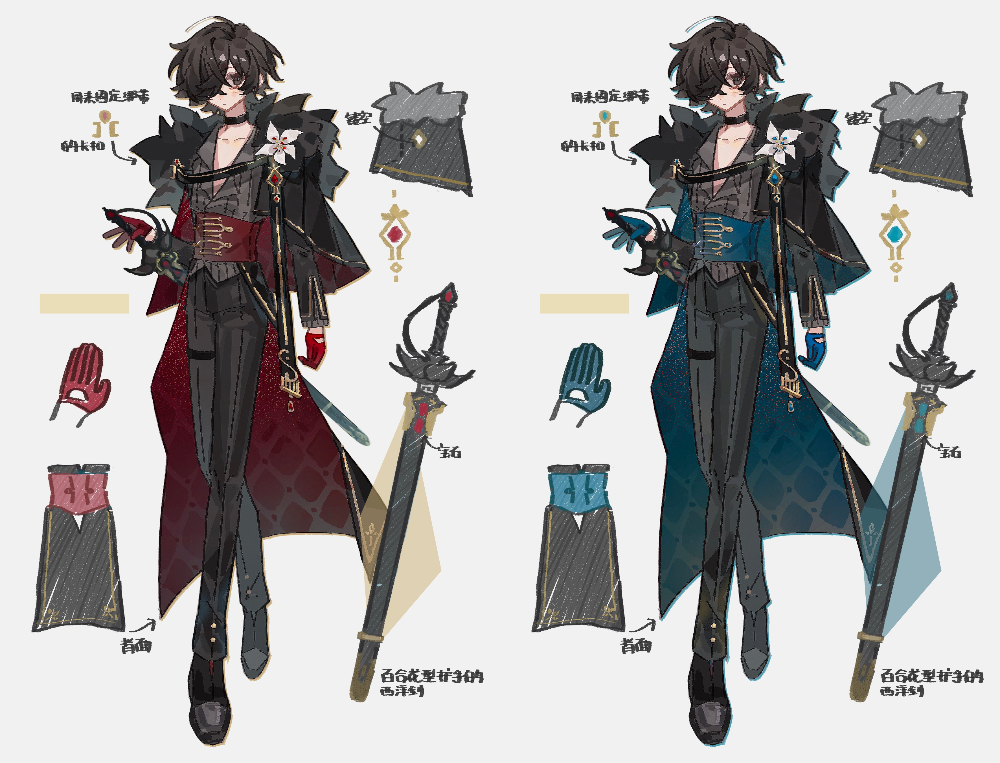

Gallery
服装设计
在不同的场景和世界中，Noah和Laertes的形象也随之变化。以下是他们在各个平行世界中的服装设计，每一套都体现了他们的特质与所处环境的关系。
学园AU
在学园AU中，Noah穿着整洁的校服，领带永远系得一丝不苟，象征着他严谨的性格。而Laertes则是叛逆的形象，校服外套随意披在肩上，衬衫扣子解开几颗，领带松散，展现出他不羁的个性。
星际AU
星际AU中，Noah身着星际联邦科学官的制服，以白色和蓝色为主，线条简洁流畅，胸前佩戴着象征科学部门的徽章。Laertes则穿着由"星尘"材料制成的战斗服，呈现出半透明的深蓝色，随着他的情绪变化而改变色调。
中式克鲁苏AU

在中式克鲁苏AU中，观莲使（Laertes）身着古代冥界神官的服饰，以黑色和暗红色为主，长袍上绣有莲花和骨纹图案，手持骨镜。照灵君（Noah）则穿着华丽的古代官服，以白色和金色为主，象征着他在人间的地位和权力。
现代都市AU
现代都市AU中，Noah作为心理医生，通常穿着简约但高级的衬衫、西裤和羊毛开衫，偶尔会戴一副金丝边眼镜，展现出专业和温和的形象。Laertes则是艺术家的装扮，喜欢穿着颜色鲜艳的衬衫、破洞牛仔裤和涂鸦风格的外套，手上和脖子上有几处小纹身。
奇幻世界AU
奇幻世界AU中，Noah作为圣光法师，穿着白色和金色相间的长袍，袍子上绣有光明符文，手持水晶法杖。Laertes作为魔染使者，则穿着深色的皮革装备，上面缠绕着紫色的魔染能量，形成独特的花纹，背后披着一件能随风飘动的斗篷。
赛博朋克AU
赛博朋克AU中，Noah作为网络安全专家，穿着高科技的白色紧身战斗服，上面有发光的蓝色线条，手臂上安装有全息投影设备。Laertes作为黑客，则穿着黑色和紫色相间的高领外套，戴着特制的VR眼镜，身上有多处机械改造，能与数据直接交互。
概念艺术
Noah在高污染区探索，身上的净化光环与周围的污染形成鲜明对比。

Laertes的半变异形态，皮肤上的污染纹路发出微弱的光芒。

Noah与Laertes在"边界区"的初次相遇，两人的能力产生共鸣，创造出平衡区域。

伊甸园总部"方舟"的外观，纯白的建筑漂浮在污染云层之上。

理想国总部"新亚特兰蒂斯"，充满未来感的浮空城市，下方是浓重的污染云层。

全知之眼的一处观测站"视界"，位于污染与非污染区域的边界。
Noah释放净化能力的瞬间，周围的污染被驱散，形成一个纯净区域。
Laertes控制污染的场景，污染在他手中形成各种形状，如同艺术品。
Noah与Laertes共同创造的平衡状态，净化与污染交织，形成一种新的能量形式。
传说中的"长夜之门"，据说只有当净化与污染达到完美平衡时才会开启。
第一次污染事件的发源地"普罗米修斯实验室"的废墟，现在是高污染区。

Noah的一段记忆碎片，显示他在成为"圣子"之前的样子。
理想国对Laertes进行改造的实验记录，记录了他如何成为"混沌使者"。
Noah与Laertes在高污染区的探索，两人的能力互补，保护彼此免受污染的侵害。
Noah的"污染人格"显现，眼睛变为黑色，表情更加冷酷。
Laertes罕见地展现出人类的一面，表情柔和，没有平时的狂放。